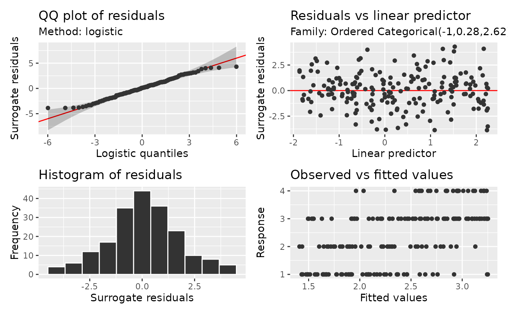

Draw continuous residuals for models fitted with mgcv::ocat() or
mgcv::multinom(), using the latent-variable methods of Liu and Zhang
(2018) and Cheng, Wang and Zhang (2021). No additional package is required.
Usage
surrogate_residuals(model, seed = NULL, ...)
# S3 method for class 'gam'
surrogate_residuals(model, seed = NULL, conditioning = NULL, ...)
# Default S3 method
surrogate_residuals(model, seed = NULL, ...)Arguments
- model
a fitted model object.
- seed
integer or
NULL; random seed for randomised residuals. WithNULL, calculations use the current random-number state. An explicit seed preserves the caller's state, including when none was previously initialised.- ...
arguments passed to other methods.
- conditioning
character or
NULL; only"conditional"is supported. The default,NULL, holds fitted random effects fixed in the same way.
Value
For ocat(), a numeric vector with one residual per observation.
For multinom(K), a numeric matrix with one row per observation and K+1
columns named "0", ..., "K", identifying the category utilities.
With na.exclude, excluded fitting rows are restored as NA; with
na.omit, only observations used for fitting are returned.
Details
An ordered categorical model represents category j by an interval between
two thresholds on a continuous latent scale. For each observation, a surrogate
response is drawn from the fitted logistic distribution restricted to its
observed category's interval. The residual subtracts the fitted latent mean
from this surrogate response.
Equivalently, draw a probability uniformly between the fitted probabilities
Pr(Y < y) and Pr(Y <= y), then apply stats::qlogis(). Under the assumed
model with known parameters, the residuals have a logistic distribution with
location zero and scale one: mean zero and variance pi^2 / 3. Fitted
parameters affect this reference approximation. The identity link reported by
ocat() describes the latent mean; its latent distribution is logistic.
This calculation shares the randomised probabilities used by
quantile_residuals(), which instead applies qnorm() for normal scores.
Both tails are calculated using log probabilities to retain accuracy when
ordinary probabilities round to zero or one. Fitting weights do not change
the scale of the latent logistic distribution.
For a nominal multinomial response, there is a utility for every category,
including category 0. Its fitted locations are (0, eta_1, ..., eta_K),
including offsets and fitted random effects, with independent standard
Gumbel errors having CDF exp(-exp(-x)). Draw the complete utility vector
conditional on the observed category being its maximum. Subtract each
location and Euler's constant (-digamma(1)) to obtain the residual vector.
Under the known-parameter model, each component has a centred Gumbel
reference with mean zero and variance pi^2 / 6; the joint null consists
of independent centred Gumbel components. The conditional draw given an
observed category preserves dependence among its utilities. Differences
from the reference utility would have dependent logistic marginals. Even
for K = 1, this function retains both Gumbel utility components.
The maximum has a Gumbel distribution with location equal to the log-sum-exp of the fitted locations, independently of the winning label. Conditional on that maximum and the observed winner, the other utilities have independent upper-truncated Gumbel distributions. The sampler uses this identity directly, with log calculations that retain accuracy for rare observed categories and extreme predictors, without rejection or Gibbs iterations. This construction does not impose an ordering on categories.
Supported fits are gam and bam models with a single ocat() family,
and gam models with multinom(). Grouped families and other model classes
are not supported. Fitted random effects are held fixed. Use
type = "surrogate" in appraise(), qq_plot(), worm_plot() and
residual plots. QQ and worm plots require method = NULL, with logistic
references for ocat() and centred Gumbel references for multinom().
Pointwise order-statistic bands apply separately to each utility component,
treating fitted parameters as fixed. They do not give simultaneous coverage
across categories. Components are always shown separately, including when
by_family = FALSE. For ocat(), residuals_linpred_plot() uses the fitted
latent mean. For multinom(), it uses each category's fitted probability;
observed-versus-fitted panels compare that probability with its category
indicator. This also gives category 0 a varying horizontal axis despite its
fixed utility location. Covariate plots separate the category utilities.
The ordered correlation helpers do not yet accept multinomial utilities.
Ordinary and scalable plots use exactly the same conditional draw for a
given seed. appraise() reuses one draw across all its panels. Scalable
plots retain the residual matrix and process one component at a time before
combining display summaries; observations, rather than utility components,
determine automatic dispatch thresholds. Changing sampler chunk sizes does
not change the draw. QQ binning and density grids change only the display.
Each call draws one residual vector per observation. Set seed for reproducibility;
repeating plots with different seeds helps assess whether a pattern persists
across residual draws. An explicit seed preserves the caller's random-number
state. With seed = NULL, sampling uses and advances the current state.
References
Cheng, C., Wang, R. and Zhang, H. (2021). Surrogate Residuals for Discrete Choice Models. Journal of Computational and Graphical Statistics, 30(1), 67–77. doi:10.1080/10618600.2020.1775618 .
Liu, D. and Zhang, H. (2018). Residuals and Diagnostics for Ordinal Regression Models: A Surrogate Approach. Journal of the American Statistical Association, 113(522), 845–854. doi:10.1080/01621459.2017.1292915 .
Examples
library("mgcv")
set.seed(359)
dat <- data.frame(x = runif(200, -2, 2))
latent <- sin(dat$x) + rlogis(nrow(dat))
dat$y <- findInterval(latent, c(-1, 0, 2)) + 1L
fit <- gam(y ~ s(x), data = dat, family = ocat(R = 4), method = "REML")
head(surrogate_residuals(fit, seed = 42))
#> [1] 3.8326093 0.8855870 -0.3476107 0.1092911 -0.4888706 1.4880031
appraise(fit, type = "surrogate", seed = 42)
